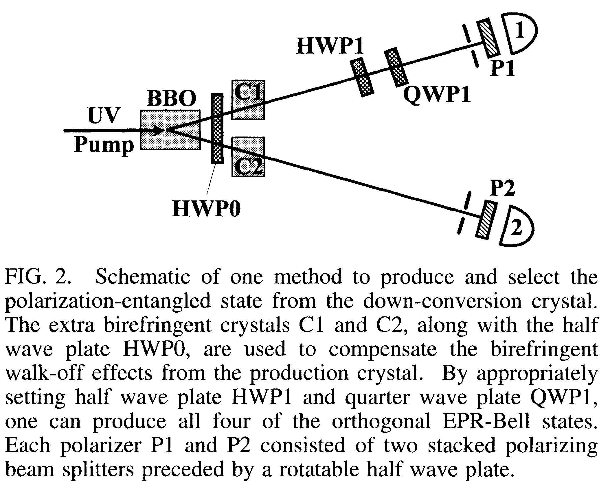

1.3.2. New High-Intensity Source of Polarization-Entangled Photon Pairs[6]
We report on a high-intensity source of polarization-entangled photon pairs with high momentum definition.Type-ll noncollinear phase matching in parametric down conversion produces true entanglement: No part of the wave function must be discarded, in contrast to previous schemes. With two-photon fringe visibilities in excess of 97%, we demonstrated a violation of Bell’s inequality by over 100 standard deviations in less than 5 min. The new source allowed ready preparation of all four of the EPR-Bell states.
To date, most of the experiments with photons from spontaneous parametric down conversion have used type-I phase matching, in which the correlated photons have the same polarization. There, for the case of degenerate emission, a pair of photons with equal wavelength emerge on a cone, which is centered on the pump beam and whose opening angle depends on the angle 6pm between the crystal optic axis and the pump. With type-II phase matching, the down—converted photons are emitted into two cones, one ordinary polarized, the other extraordinary polarized. In the collinear situation the two cones are tangent to one another on exactly one line, namely, the pump beam direction. If 6pm is decreased, the two cones will separate from each other entirely. However, if the angle is increased, the two cones tilt toward the pump, causing an intersection along two lines (see Fig. 1). Along the two directions (“1” and “2”), where the cones overlap, the light can be essentially described by an entangled state: where H and V indicate horizontal (extraordinary) and vertical (ordinary) polarization, respectively. The relative phase oz arises from the crystal birefringence, and an overall phase shift is omitted.
Because the photons are produced coherently along the entire length of the crystal, one can completely compensate for the longitudinal walk-off—after compensation, interference occurs pairwise between processes where the photon pair is created at distances from the middle of the crystal. The ideal compensation therefore uses two crystals, one in each path, which are identical to the down-conversion crystal, but only half as long. If the polarization of the light is first rotated by 90° (e.g., with a half wave plate), the retardations of the and the components are exchanged and complete temporal indistinguishability is restored (). The same method provides the optimal compensation for the transverse walk-off effect as well

